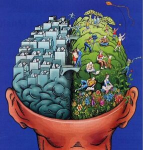

Psicología fisiológica
La psicobiología es la rama de la psicología que estudia las bases biológicas de la conducta y los procesos mentales
Su objetivo es poner de manifiesto cuáles son los procesos y sistemas biológicos involucarados en el comportamiento

Factor filogenético de la fisiología psicológica del ser humano
Factor filogenético: Hace referencia a la historia evolutiva de nuestra especie,el cual se lleva en nuestros genes y se transmiten de generación en generación

Factor ontogénico de la fisiología psicológica del ser humano
Factor ontogénico: Estudia las circunstancias del ambiente interno y externo que modifican el factor filogenético, es decir, la variabilidad genética y la interacción entre genes y el medio ambiente, nos hace diferentes a los demás